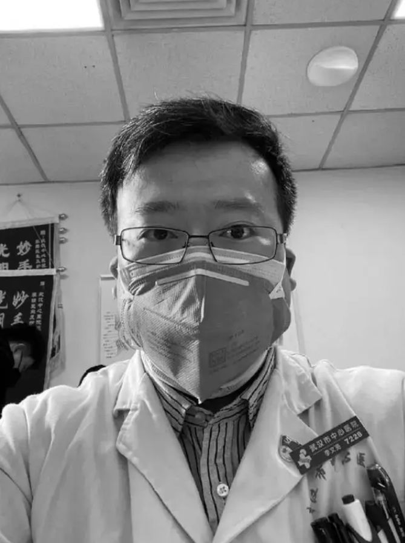

作家方方：武汉市中心医院难以承受之重-作家方方-财新博客-新世纪的常识传播者-财新网
原文链接 备份链接 3月3日。 依然天阴，有点冷嗖嗖的。我在郊区的邻居一早发给我照片。留言说，你家的海棠开花了，你的微信文被封了。微信内容被封，我已习惯。但海棠开花却实在让人高兴。去年夏秋，一直大旱。树叶全枯并且掉光，我很担心这棵树会死 …


全文共*1529*字，阅读大约需要3分钟。
本文首发于南方周末 未经授权 不得转载
文 | 辛省志
责任编辑 | 陈斌
2020年2月6日晚上，全中国亿万网友彻夜难眠，为李文亮医生祈祷。包括本报记者在内的多家媒体记者，在武汉市中心医院苦苦守候。
这位被称为此次新冠肺炎疫情“吹哨人”的武汉医生早前已感染病毒，病危之后，6日晚一会儿传出去世的消息，一会儿又传出还在抢救中，前后反转了几次。7日0：38分，其所在的武汉中心医院发布微博说“目前病危，正在全力抢救中”。03:48分，武汉中心医院再次发布微博称“”李文亮“2月7日凌晨2点58分去世，对此我们深表痛惜和哀悼”。
这个消息，让无数人洒泪，无数人伤悲。
在这场灾难中，李医生在早期发出的预警和他随后的遭遇，牵动了亿万人心。2019年12月30日，武汉市中心医院眼科医生李文亮在有150人左右的同学群里发布了一条消息，称中心医院急诊科隔离收治了7名SARS确诊病人（随后更正为冠状病毒感染），提醒多在武汉医院工作的同学们小心防范。他的发言被截图发到群外，在网络广泛传播。
但当天深夜，他就被武汉市卫健委叫去询问情况，第二天又被医院监察科约谈。2020年1月3日，李文亮又以“传播谣言”被派出所训诫。但是事态后来的发展证明，李文亮医生所说并非谣言。
被训诫后，李文亮医生没有气馁，继续在一线工作，恪尽职守，不幸在几天之后工作中感染了病毒，住院治疗。有媒体记者1月30日采访他时，他已经住进了重症监护室，但还对记者表示，康复之后仍然要上一线。
李文亮医生接受采访时表示，自己不在意是否能平反，因为“真相最重要”。诚哉斯言。正是由于他的发言，让新冠肺炎引起了公众的广泛关注。如果能够从那时就开始正视疫情，采取果断的措施，肺炎疫情不至于失控到如今的地步。然而没有如果。随后武汉方面通过公安机关“处置”8名“造谣传谣”的医生，让公众和决策层都低估了疫情的严重性，终至在武汉造成如此严峻的局面，全国也受到极大影响。
1月29日，最高法在官方微信公众号发文，从法律层面讨论谣言问题。文章说，所谓“谣言”（法律上称为虚假信息）起源于个体认知能力的局限，更起源于信息公开的不及时、不透明。解决谣言问题，信息公开是治本。如果政府信息公开及时准确，谣言就会失去市场。反之，如果“谣言”一次次被证实是“遥遥领先的预言”，那么在突发事件面前，民众会自然地选择相信谣言。文章说，试图对一切不完全符合事实的信息都进行法律打击，既无法律上的必要，更无制度上的可能，甚至会让我们对谣言的打击走向法律正义价值的反面，成为削弱政府公信力的反面教材。
这正是“吹哨人”的存在对于整个社会不可估量的价值与意义。假如时光可以倒流，假如李文亮医生在疫情发生之初的预警得到及时回应与采取措施，新冠肺炎是否不至发展成如此沉重局势，人们可以避免多少苦痛？而李文亮医生被公安机关定义为“发布不实信息”并进行训诫，又在多大程度上伤害了公众对当地的信任并且造成了更大的混乱？
正是李文亮医生的勇敢发言，撕开了幕布的一角，在早期引起了一部分公众对疫情的重视。
我们哀悼李文亮医生。他的音容永远停留在那一刻。无父何恃？他的孩子们失去了父爱，他尚未出世的孩子将永远见不到父亲的样子，他的妻子、父母与家人失去了家庭的梁木。他的逝去不是在统计数字上多了一个1，而是一个生命的悲剧，这样的悲剧已经数以百计、还在增加。
我们感谢李文亮医生，因为他基于专业和善良发出的最早哨音。我们也必须铭记，由于那哨音未能得到及时传播而让社会付出的巨大代价。希望这代价能换来真正的反思与进步，这是李医生用他的职业荣誉与生命践行的真理。
武汉市政府在2月7日发布公告对李文亮表达了哀悼与敬意，但训诫书犹在，“吹哨人”何以安息？人们还希望看到对李文亮等人的训诫能得到纠正，让付出了巨大代价的“吹哨人”能得到正名。
文亮文亮，一个人所蕴含与发出的文明光亮，将永远照亮我们。李文亮医生千古！

征集

《南方周末》现向所有身处新冠肺炎一线的读者公开征集新闻线索。我们欢迎武汉及周边城市医患联系记者，提供防疫前线的一手资讯，讲述您的新春疫情见闻。若您不在武汉，但您身处之所也有与疫情相关的重要新闻线索，亦欢迎您与我们分享。疫情仍在蔓延，南方周末将执笔记录每位国人在疫情面前的希望与困境，与广大读者共同面对疫情。祝愿所有读者朋友们，新春平安。线索可直接给本篇文章留言，格式为：【线索】+内容+您的电话（绝对会对您的个人信息保密）
戳击下面图片 继续阅读专题


原文链接 备份链接 3月3日。 依然天阴，有点冷嗖嗖的。我在郊区的邻居一早发给我照片。留言说，你家的海棠开花了，你的微信文被封了。微信内容被封，我已习惯。但海棠开花却实在让人高兴。去年夏秋，一直大旱。树叶全枯并且掉光，我很担心这棵树会死 …
原文链接 备份链接 武汉中心医院眼科医生李文亮（1986-2020）（资料图/图） 全文共*5612*字，阅读大约需要14分钟。 李文亮还活着吗？李文亮抢救过来了吗？这位武汉眼科医生的命运，在这个深夜牵动着很多人的心。直到凌 …
原文链接 备份链接 在接受媒体采访时，被问及康复后有什么计划，李文亮说：“恢复以后还是要上一线，疫情还在扩散，不想当逃兵！至于疫情以后的事，还没想太多。” 全文2071字，阅读约需4分钟 2月7日凌晨，武汉中心医院官方微博发布消息：我院 …
原文链接 备份链接 他曾许过一个新年愿望，新的一岁希望能做一个简单的人，看得清世间繁杂却不在心中留下痕迹，保持足够的平常心。他还说，不经审视的人生是不值得过的，希望大家都能实现自己的价值，共勉。他的微信签名是，「理论是灰色的，生命之树常 …
原文链接 备份链接 和你们一样，昨晚我也难过了很久，在有人告诉我说李文亮医生也关注了我之后，这种难过就又加深了一些，就像一柄钝刀，在胸口剜了一道锈迹斑斑的伤痕，越是想要愈合，就越是痛彻心扉。 是的，和17年前破釜沉舟的蒋彦勇医生不一样，把 …